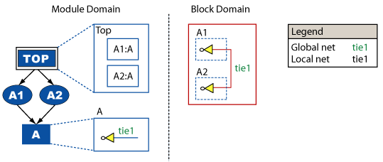
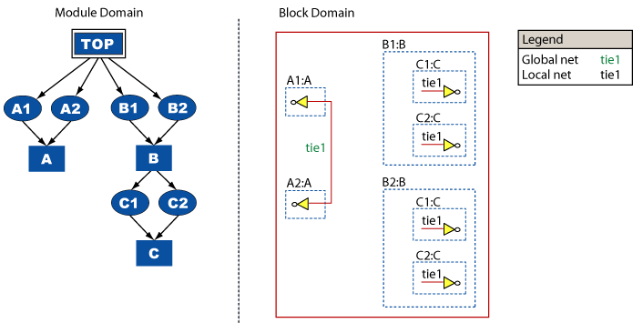
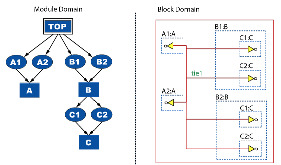
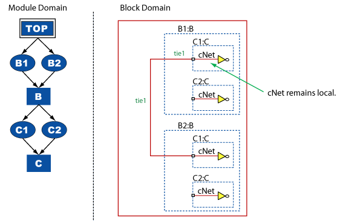
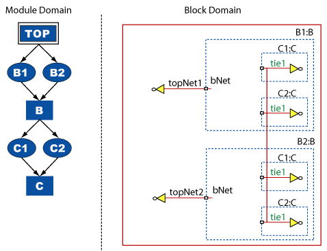
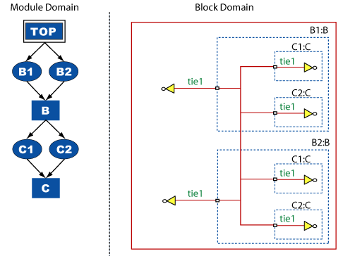

|
 |
 |
||||||
|
|
|
||||||
The consistency of the global state of a net is preserved across the OpenAccess hierarchy domains. This document explains how global nets can be used in OpenAccess.
A global net created in the module domain results in a global net in the block domain. However, OpenAccess does not create a corresponding net in the top module. An application must explicitly create such a net.
The following example shows a global tie1 net that was created in module A. This resulted in a single, global net in the block domain. Note that there is no corresponding global tie1 net in the top module.

An application can explicitly create a global net in the top module when a global net with the same name already exists. Doing so simply reflects the existing oaOccNet into the module domain and has no effect on the global set. It is an error to attempt to create a local oaModNet in the top module with the same name as a global net.
When an existing, non-global net in the module domain is set to global, all of the oaOccNets that are unfolded from that oaModNet are set to global and added to the corresponding global set. This process is incremental and on a per net basis. Other nets in other modules with the same name as the global net that are not marked global are not added to the global set even if those other nets are in the module hierarchy of the net that is set global.
In the following example, the tie1 net in module C is an ordinary local net.

If the application sets the tie1 net in module C to be global, the following connections are made in the block domain.

When the global state of a module net is unset, all the oaOccNets that are unfolded from that oaModNet have their global state unset and those oaOccNets are removed from the global set. This process is incremental and has no effect on nets with the same name that are either lower or higher in the module hierarchy. It is an error to attempt to unset the global state of an oaModNet in the top module.
Consider the example in the previous section. If you begin at a state where all the tie1 nets are global (the second figure) then unset the global state of the tie1 net in module C, the design returns the state shown in the first figure.
From the perspective of maintaining the global set, destroying a global net in the module domain is similar to unsetting its global state: all the oaOccNets unfolded from the oaModNet are removed from the corresponding global set. The remaining global set continues to be reflected as a single global net in the block domain.
Setting the global state of a block net sets the global state of every oaOccNet with the same local name, and adds those oaOccNets to the global set.
When a block net includes connectivity from an oaOccNet with a different local name, setting the global state of the block net does not change the global state of that oaOccNet, and it is not included in the global set.
Refer to Connecting Global Nets Through oaModInstTerms in the Module Domain and Connecting Global Nets through oaModTerms in the Module Domain to learn more about a block net that includes connectivity from an oaOccNet with a different name.
Unsetting the global state of a block net unsets the global state of every oaOccNet in the global set and removes all oaOccNets from the global set. The block net continues to exist as an ordinary net. The nets that were previously in the global set are reflected into the block domain as disjoint block nets.
When a global block net includes connectivity from a non-global oaOccNet, unsetting the global state of the block net does not change the global state of that oaOccNet because it is not included in the global set.
Refer to Connecting Global Nets Through oaModInstTerms in the Module Domain and Connecting Global Nets through oaModTerms in the Module Domain to learn more about a block net that includes connectivity from a non-global oaOccNet
Destroying the global net that is the reflection of the global set in the block domain destroys all the nets in the global set.
When a global net in the module domain is connected to an oaModInstTerm, the span of the local net in the instance master that is connected to the corresponding terminal is merged into the span of the global oaOccNet. However, none of the nets in that local span are marked global and none of the nets are added to the global set. As a result, the block net that is the reflection of the global set reflects the connectivity of the global set plus the span of any local nets connected to members of the set, but the local nets remain local. In particular, oaOccNet::getGlobalNets() does not return any local nets that are connected to a global net through oaModTerms and oaModInstTerm.
In the following example, the global tie1 net in module B is connected through an oaModInstTerm/oaModTerm to the local net cNet in module C. This does not change the number of elements in the global set, and cNet is not marked global. Nets reflected into the block domain by oaOccNets that correspond to cNet and which are not connected to the global oaOccNet remain as distinct block nets. The connectivity of nets reflected into the block domain by oaOccNets that correspond to cNet that are connected to the global oaOccNet is merged into the connectivity of the global block net.

When a global net is ported through a terminal and when connectivity is established to that terminal through an oaModInstTerm, the local nets in the upper level of hierarchy that are connected to the global net through the oaModInstTerm remain local and the connectivity of the block nets reflected by the local oaOccNets is merged into the corresponding global block net. This behavior corresponds to the behavior described in the previous section. When two spans are merged in this manner, the global net is always chosen as the net to represent the merged span in the block domain.
Consider the following example. In the initial state, there is a global net tie1 in module C that does not exist anywhere else in the module hierarchy. The global set is reflected into the block domain as a single global net named tie1. The global tie1 net in module C is ported through a terminal, but there are no oaModInstTerms of that terminal. There are also two instances of module C in module B, and module B has some connectivity to the top module through oaModTerms and oaModInstTerms.

When an oaModInstTerm is created that connects bNet in module B to the terminal of tie1 of instance C1 of module C, the following state is the result.

Connecting bNet to tie1 though an oaInstTerm on C1 causes the block nets topNet1 and topNet2 to be merged into the global tie1 net in the block. However, the module nets topNet1, topNet2, and bNet remain as local nets. The oaOccNets unfolded from topNet1, topNet2, and bNet are not part of the global set.
The span of an oaOccNet is defined as the set of nets that are transitively connected to the given oaOccNet through oaOccTerms and oaOccInstTerms. Because global nets are joined implicitly through their name and their global state (not through oaOccTerms and oaOccInstTerms), the span of a global oaOccNet is always the oaOccNet itself. The oaOccNet::getSpan() function returns a collection with exactly one element when called on a global oaOccNet unless that oaOccNet is also connected to other local oaOccNets through oaOccTerms and oaOccInstTerms.
Global nets are used to implement connections to oaInstTerms in different levels of the hierarchy without threading the signal though all the hierarchical interfaces. (In Verilog, these are called out-of-module references.)
Applications can return the set of global nets in an occurrence hierarchy.
oaCollection<oaOccNet, oaOccurrence> oaOccurrence::getNets(oacNetIterGlobal)
oaCollection<oaOccNet, oaOccNet> oaOccNet::getGlobalNets()
Copyright © 2001-2010 Cadence Design Systems, Inc.
All rights reserved.